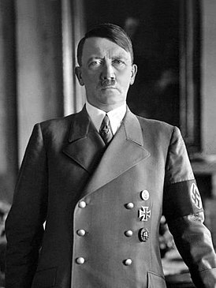

Боевые офицеры презирали "мясников" из СС
считали позорным вести войну против гражданского населения и расстреливать пленных. Тем не менее, Штауффенберг, как и многие его офицеры-единомышленники, считал, что сначала нужно выиграть войну.
Биограф Штауффенберга Томас Карлауф (Thomas Karlauf) отмечает, что в 1940 году, после стремительных военных побед над Польшей и Францией, Штауффенберг все еще был в восторге: "Какие перемены и какое время!" Для него и других представителей военного сопротивления это был "очень-очень долгий путь к очищению", отмечает историк Вольфганг Бенц (Wolfgang Benz), добавляя: "Холокост их совершенно не интересовал". Однако надвигалось военное поражение, они хотели совершить государственный переворот, чтобы "спасти то, что можно спасти" для Германии, резюмирует Бенц.
Собственно, настроения в оппозиционных Гитлеру кругах начало меняться уже в 1942-1943 годах. И главная причина - поворот в ходе войны: большие потери в людях и технике. После Сталинграда для Штауффенберга не оставалось никаких сомнений: война проиграна. Именно в это время пришел положительный ответ на давно поданный им рапорт о переводе из Генштаба, где он тогда служил, на фронт. Не на Восточный фронт, а в Африку.
А тем временем заговорщики пытались организовать все новые и новые покушения на Гитлера. 13 марта 1943 года удалось пронести в самолет, на котором летел фюрер, взрывное устройство, замаскированное под бутылку с коньяком, но оно не сработало. Неудачными оказались и другие попытки, например, гауптмана Акселя фон дем Бусше (Axel von dem Bussche).
"Фюрер" выразил желание познакомиться с новым обмундированием для офицеров и унтер-офицеров вермахта. Он пожелал, чтобы на этой "презентации" в качестве эксперта обязательно присутствовал опытный фронтовой командир. Заговорщикам удалось устроить так, чтобы этим командиром стал гауптман Бусше. Ему предстояло взорвать себя вместе с Гитлером. Но эшелон, в котором находились образцы нового обмундирования, был разбомблен по пути в Восточную Пруссию, и "презентация" не состоялась.
linkslorem
Сергей Медведев: Война в Украине актуализировала тему Второй мировой войны, ведь война ведется под лозунгами "денацификации и демилитаризации Украины". И мы обращаемся к теням прошлого, к истории Третьего рейха и покушений на Адольфа Гитлера. Как известно, их было несколько, и самое знаменитое – это провалившийся заговор полковника Клауса фон Штауффенберга 20 июля 1944 года. Ни одно из этих покушений не кончилось успехом, как известно, фюрер покончил с собой в бункере в Берлине в мае 1945 года. Но остается вопрос: могло ли убийство Гитлера спасти мир?
loremlorem
Сергей Медведев: Война в Украине актуализировала тему Второй мировой войны, ведь война ведется под лозунгами "денацификации и демилитаризации Украины". И мы обращаемся к теням прошлого, к истории Третьего рейха и покушений на Адольфа Гитлера. Как известно, их было несколько, и самое знаменитое – это провалившийся заговор полковника Клауса фон Штауффенберга 20 июля 1944 года. Ни одно из этих покушений не кончилось успехом, как известно, фюрер покончил с собой в бункере в Берлине в мае 1945 года. Но остается вопрос: могло ли убийство Гитлера спасти мир?
loremlorem
Сергей Медведев: Война в Украине актуализировала тему Второй мировой войны, ведь война ведется под лозунгами "денацификации и демилитаризации Украины". И мы обращаемся к теням прошлого, к истории Третьего рейха и покушений на Адольфа Гитлера. Как известно, их было несколько, и самое знаменитое – это провалившийся заговор полковника Клауса фон Штауффенберга 20 июля 1944 года. Ни одно из этих покушений не кончилось успехом, как известно, фюрер покончил с собой в бункере в Берлине в мае 1945 года. Но остается вопрос: могло ли убийство Гитлера спасти мир?
loremlorem
Сергей Медведев: Война в Украине актуализировала тему Второй мировой войны, ведь война ведется под лозунгами "денацификации и демилитаризации Украины". И мы обращаемся к теням прошлого, к истории Третьего рейха и покушений на Адольфа Гитлера. Как известно, их было несколько, и самое знаменитое – это провалившийся заговор полковника Клауса фон Штауффенберга 20 июля 1944 года. Ни одно из этих покушений не кончилось успехом, как известно, фюрер покончил с собой в бункере в Берлине в мае 1945 года. Но остается вопрос: могло ли убийство Гитлера спасти мир?
lorem